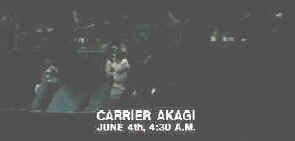

|
Midway/B-,C+ |
|
Anchor Bay/1976/131m/WS 2.35 |
Filmed at a deliberate pace with
straightforward recreation of the action and decision-making,
Midway makes an interesting case for luck as the final
ingredient in winning and losing battles and maybe wars. The
depiction of the events leading up to and including the famous
naval battle between the heart of the Japanese and the
defending American ships, the widescreen epic war film is
entertaining, if somewhat cut-and-dry.
Charlton Heston stars as Captain Matt
Garth, who goes from a desk assignment at Pearl Harbor to
temporary duty on Aircraft Carrier Yorktown. An attempt at personal drama
involves Garth's Ensign son's romance with a Japanese/American
girl accused of seditious sympathies. This sinks faster than any
ship at Pearl during the infamous Japanese attack. Big name
stars appear in various roles, including Henry Fonda, typically
solid as Admiral Nimitz, Glenn Ford as Rear-Admiral Ray
Spruance, giving a rather self-effacing performance, and Robert
Mitchum as Admiral Bull Halsey bed-ridden by an rash of bad
dialogue. Toshiro Mifune, as Admiral Yamamoto, gets the dub
treatment, which leaves his character afloat in a sea of perfect
diction.
The battle sequences are merely okay, but
somehow the film manages to develop a reasonable amount of
excitement. I suppose the photography of Harry Stradling, Jr is
the most powerful element of Midway. Or maybe it's coming
away with an understanding of the importance of this pivotal
naval battle. Director Jack Smight cuts liberally between the
battle venues in an attempt to emphasize the tension.
 |
|
Looking good George. ©Fox |
The identification graphics were so frequent
that in any scene transition where they were absent I was almost
surprised. Graphics denoting the Enterprise, Hiroshima, Midway
Island, Carrier Hiryi, Battleship
Yamato are joined with graphics indicating squadron leader
this or lieutenant
that flying the various missions to stop the enemy ships. Some of the graphics are so brief one wonders why they
even bothered to make the cut. But the graphics do keep you
located within the world of Midway and maybe that adds to a
level of concentration the film mounts.
There
are several disappointments with Midway on DVD. First is the
unexceptional mono sound. This was one of Universal’s
“Sensurround”
productions. Theaters were actually outfitted with special
subwoofers under the seats to produce more bass than you could
ignore. The explosions on this DVD edition failed to rouse me from my
comfortable theater chair. There are plenty of image artifacts
associated with the limitations of the NTSC system. Inter line
flicker and smearing of fine detail detracts from the overall
presentation. On the plus side, the transfer elements are in
good shape with color stable and reasonably saturated.

The
Feature
Archive has articles ranging from Akira
Kurosawa to Blonde
Bimbos and John
Ford.

Click on the image above for as original view of Akira
Kurosawa's work.

They may
be judgmental, but that's the point, isn't it. Lots of DVD reviews
plus news and more.
Click on the link to visit the judge's chambers.
 Brad Lang
continues to add more interesting to the extensive collection at
Classic
Movies. Everything from actors and actress to your
favorite directors is linked at the site.
Brad Lang
continues to add more interesting to the extensive collection at
Classic
Movies. Everything from actors and actress to your
favorite directors is linked at the site.

ReelUniverse.com is
the home of the true Indies. You
will find links to many independent
filmmakers selling VHS copies of
their films that have not yet gotten
commercial release. None of the
filmmakers represented on the site
have DVD product available, but
here's hoping.

The Movie Poster Archive include extensive poster images from the films of stars like Susan Hayward, Kirk Douglas, Katharine Hepburn and many more. This month's featured star is Danny Kaye